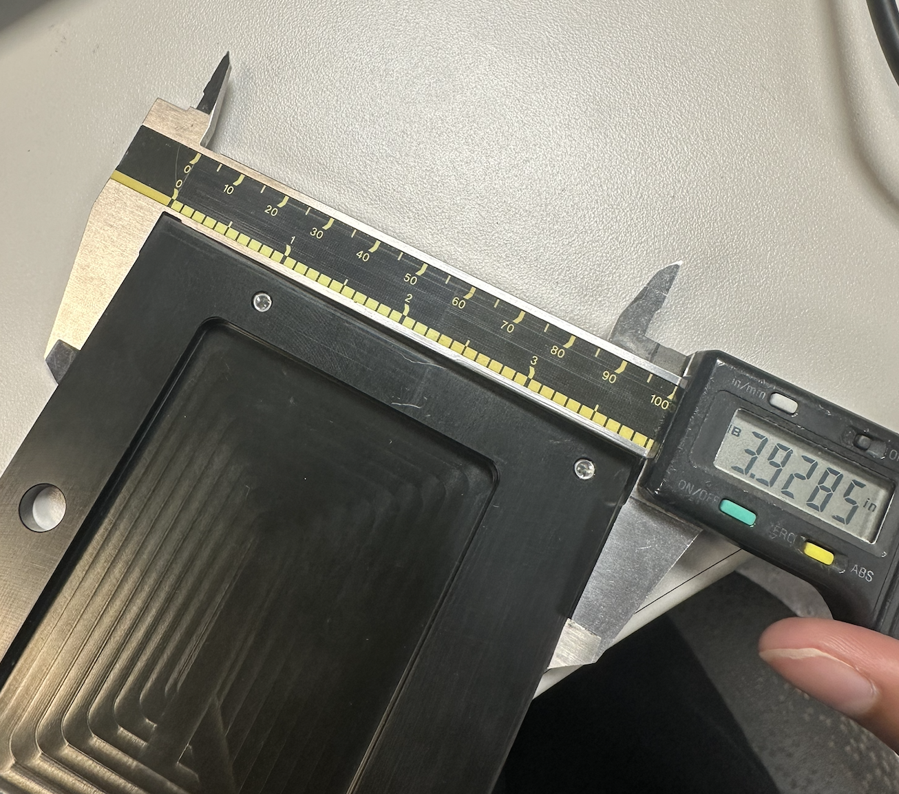
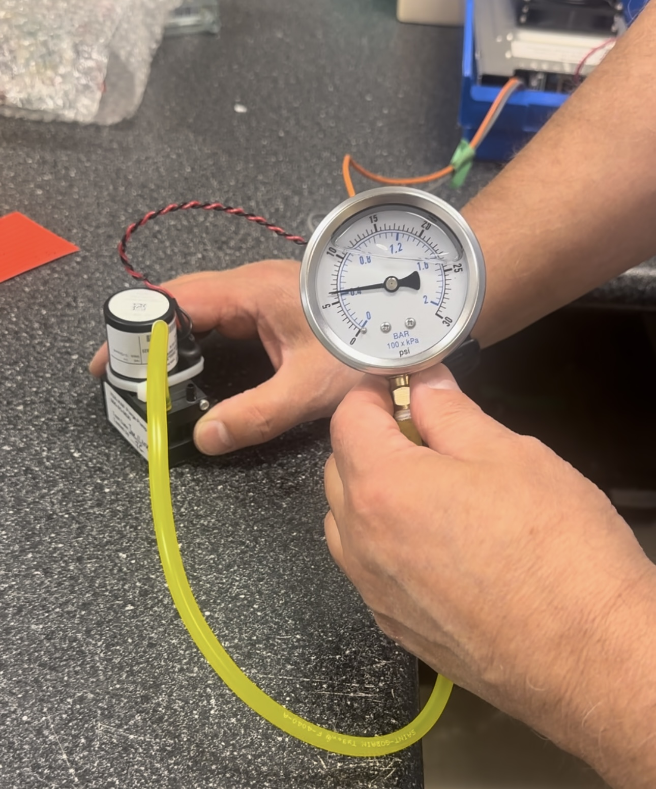
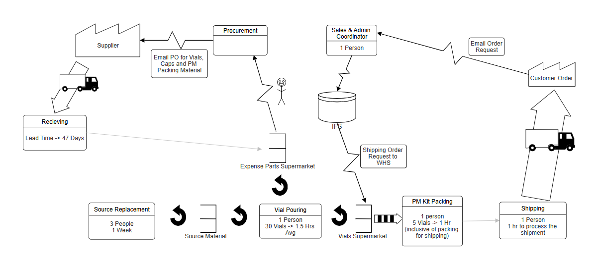
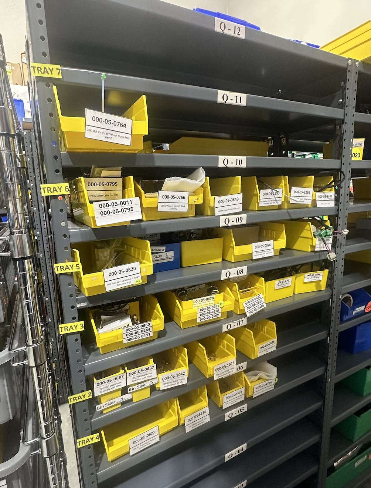

Quality & Continuous Improvement
Hands-on quality and Lean manufacturing work spanning incoming inspection, defect investigation, MRP disposition, and process improvement.
Overview
My role at Phase Technology sat between quality and manufacturing. I inspected incoming parts, investigated recurring production failures, managed nonconforming material, worked with suppliers and R&D on corrective actions, and used Lean methods to improve how material moved through production.
What made the role valuable was seeing the complete quality cycle. A problem did not end when I found a defective part. I often followed it from inspection and containment through root-cause investigation, disposition, supplier communication, process improvement, and documentation.
Containing Problems Before Production
A major part of my work started with incoming inspection. I inspected more than 30 machined and PCB components per week against engineering drawings, specifications, tolerances, and acceptance requirements before they entered production.
Depending on the component, this involved dimensional and visual inspection, PCB checks, leak testing, pressure testing, or functional verification. The objective was not simply to mark a component pass or fail, but to identify issues early enough that they could be contained before creating problems further downstream.


When a component did not meet requirements, I documented the nonconformance and moved it into the disposition process rather than allowing questionable material to continue into assembly. This connected incoming inspection directly to production control.
Following Recurring Failures Beyond Inspection
Some quality problems were not isolated incoming defects. Recurring leak failures required a deeper investigation because passing or failing the final test did not explain why the failure was occurring.
I worked with R&D to examine the problem across component design, materials, interfaces, manufacturing conditions, and assembly methods. I used FMEA and root-cause analysis to structure the investigation and narrow the number of possible failure mechanisms.
This changed the work from simple defect detection into a structured engineering investigation. Instead of repeatedly containing the same failure, the goal became understanding which variable was driving it and what needed to change to prevent recurrence.
Moving Nonconforming Material Toward Disposition
At the same time, I was working through a large backlog of open material issues in a fast-moving production environment. I managed 100+ open MRPs, tracking nonconforming parts through review and disposition while coordinating with engineering, production, quality, and suppliers.
I maintained the MRP and nonconformance records in Excel and followed each issue until a decision could be made. Depending on the problem, that could involve confirming dimensions, reviewing drawings, discussing manufacturability, gathering additional test information, or getting input from the supplier.
Supplier communication was therefore part of the same process rather than a separate activity. Incoming inspection findings often led directly into conversations about tolerances, drawing interpretation, defects, part design, or corrective action.
The objective was to keep material moving without bypassing the quality process: identify the issue, get the right technical input, reach a disposition, and prevent unresolved material from becoming a production bottleneck.
Turning Production Observations into Process Improvements
My work also extended beyond individual defects. I used Value Stream Mapping to study how material and work moved through the production process and identify where operator time was being lost.
I looked for waiting, unnecessary motion, material delays, process bottlenecks, and other non-value-added activities. The resulting improvement plan targeted approximately 1.5 operator-hours of savings per day.

The analysis then translated into physical changes on the floor. I applied 5S to improve workstation organization and reduce unnecessary motion, and worked with the warehouse to implement a Kanban pull system for material replenishment.
The Kanban system shifted replenishment toward actual production demand instead of relying on less structured material movement, helping improve availability while reducing the risk of shortages interrupting production.

Making the Improvements Repeatable
Process improvements only matter if the new method can be repeated consistently, so I also worked on the documentation and measurement controls supporting production.
I created and updated work instructions to translate engineering and quality requirements into clear shop-floor processes, and supported ECOS change control so approved changes were incorporated through controlled documentation rather than informal updates.
I also worked on calibration and verification controls for test and inspection equipment. Because inspection decisions depend on the measurement system itself, maintaining confidence in the equipment was part of maintaining confidence in the quality decision.
Outcome
The role gave me experience across the complete path from detecting a manufacturing problem to helping prevent it from recurring. Incoming inspection contained defective material, FMEA and RCA helped investigate recurring failures, MRP management moved nonconformances toward disposition, supplier and R&D collaboration supported corrective action, and Lean improvements addressed waste in the broader production system.
The workflow I worked across was ultimately: detect → contain → investigate → disposition → corrective action → standardize .